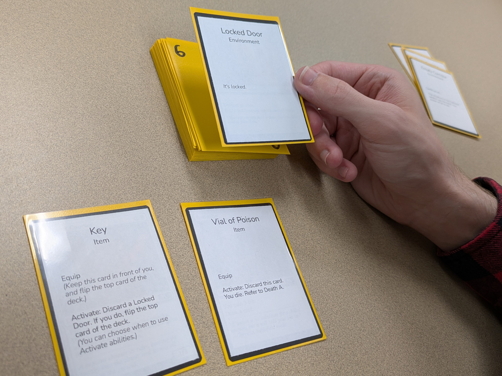
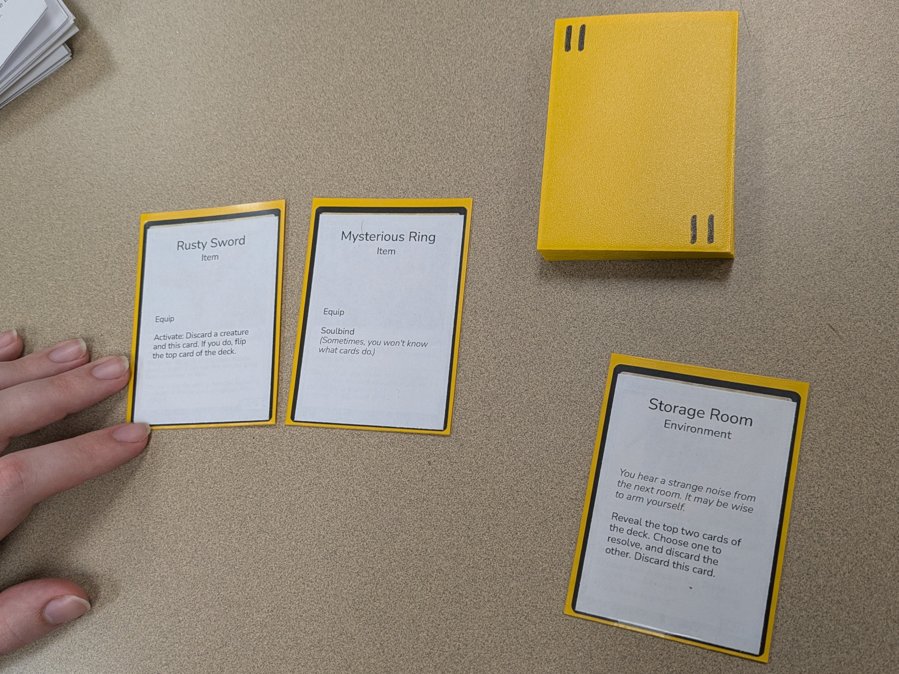

The Tower
To play, print and cut out The Cards. Cut out the cards from top-left to bottom-right, left to right, and number the backs of them as you go, starting at 0 (The Tower should be 0, Dusty Corridor should be 1, Storage Room should be 9, The Basement should be 25).
At certain points, the game will ask you to refer to a Death or a Victory, such as on Card 4, Vial of Poison, which asks you to refer to Death A. To do this, you may either print and cut out the hintbooks linked below, or refer back to this page which has each Death and Victory linked at the bottom.
Before playing, ensure that the deck is ordered from 0 to 25, with Card 25 face-down on the bottom of the deck and Card 0 face-down on the top. When you are ready, flip Card 0 to begin. Please enjoy.
Hintbook I
Hintbook II


Artist Statement
This is a puzzle game based around learning the rules of a card game. It was inspired by my experience with learning how to play Magic: The Gathering, and reflects some common frustrations that I find new players running into while learning the game. You do NOT need to know how to play Magic in order to play this game, but a player familiar with Magic may have an easier time; the rules used in this game are not the same as the ones in Magic, but the structure of cards and timing is similar. The game was built to be accessible to anyone willing to learn.
The Tower does not exist purely as meta-commentary. I genuinely love games like this, where the rules are unknown and reveal themselves through play. Unfortunately, they aren’t very common, and don’t hold much replay value unless you are playing with new players. Like many puzzle games, the “AHA!” moment of understanding how a rule works can only be experienced once.
I originally considered making this a Twine game, however I think the physical aspect gives the player a level of control that is useful to the expereince of the game. It also helps to hide some of the puzzles -- there are common mistakes that I intended to be possible and that players made during playtesting, that the game accounts for. The real magic of this game is that you can make a mistake without realizing, and the game will know. Of course, it’s not possible to build a game immune to every mistake a player could make, but hopefully I’ve been thorough enough to catch a majority of them.
When viewed through the lens of games critique, I hope that any frustrations experienced with this game can be seen as parallels to other aspects of cardgaming. None of the puzzles I’ve included in this game are entirely new: each one is based on a rules interaction I have had to contend with while playing a cardgame. I also wanted to shine a light on the inaccessability of card games due to unintuitive knowledge -- this game is impossible to win in one blind attempt without at least one Death and reset.
Deaths and Victories
Death A
Death B
Death C
Death D
Death E
Death F
Death G
Death H
Death I
Death J
Victory A
Victory B
Back